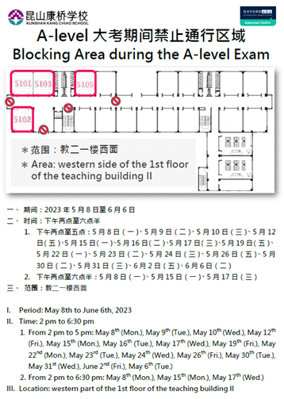

每日公报：整理来自学校校园公报的内容，整理出一个更利于班主任在早自习向学生们宣导及学生查看的内容板块。
周常内容通告
探索课：812(周二)。
2023年6月6日Week 18
2023年6月12日将进行G8“初中生物与地理学科毕业考查”，请同学们准备考试携带物品：
生物和地理相关课本、2B 铅笔、 橡皮、 0 .5 mm 黑色墨水签字笔
2023-2024学年第一学期周一、周二社团选课将在2023/06/01早9：00开始，截止日期为2023/06/15晚间21:00。选课SOP详见附档，请在提交成功选课单后，需检查选课单志愿顺序是否和自己所选的内容一致，若选课志愿顺序不一致，请点击课程右侧上下箭头进行顺序调整。运动类社团因场地人数限制，最终选课结果会依据系统订单先后顺序排列，人数满员后将顺延第二志愿。*选课链接(校内)
23秋学期才艺晚间一对一小课、吉他乐团和流行乐团开放报名中，想要报名的同学请与家长确认，并于6/20（二）下午5:00完成报名，以利课程安排，谢谢！*选课链接
⭐【小课课别】：
乐理、声乐、钢琴、小提琴、中提琴、大提琴、低音提琴、长笛、单簧管、双簧管、大管、萨克斯风、小号、长号、圆号、大号、古典打击乐、架子鼓、古筝、乌克丽丽、民谣吉他、古典吉他、二胡、口琴、琵琶、阮咸、中国笛、国标舞、街舞、爵士舞、现代舞、民族舞
⭐【重要提醒】：
1. 小课为学期制，每人每学期只能报一门课程。
2. 收费标准：一节课45分钟，350元/45分钟，一次性收取15节课费用，共计5,250元。学期末会根据实际上课节数，多退少补。
3. 上课时间：晚自习时间。
4. 关于请假：如需请假请于上课日前一日（24小时前）向艺文中心提出，未于前一日（24小时前）提出者，费用不予退还。请直接与艺文中心提出请假，勿请班主任或其他老师代为转达，以免信息错漏。
语言中心将于6月9日（本周五）举办open day活动，请以下晚课班级名单内同学（详询班主任）在周五放学后15:15前往open day教室与家长汇合，谢谢！
（早/中/晚）餐点中的酸奶、水果请勿带出餐厅，如发现将食物带出餐厅或乱丢垃圾将给予2次detention。
2023年5月8日至6月6日下午为A-level学生参加英国官方全球大考的重要日子，请各位同学一起维护教二楼一楼的周边区域，让A-level学生可以在安静的环境中，专心参加考试，谢谢大家的帮忙。
a. 考试期间限制通行区域，为教二楼一楼西侧。
b. 教二楼一楼西侧出入口于A-level考试期间将设路障阻挡。
c. 所有学生在A-level考试期间请避免进出该区域。
d. 具体封闭日时间及区域，敬请参考下图

图书馆将于今天（2023/06/06 周二）全天闭馆以举办IBDP EE成果展，请需要来馆借还书的同学们避开该时间段，感谢大家的配合。
图书馆南侧钢构雨蓬施工，预计2/28前(不知道什么时候)完成，请师生避开此区域，谢谢！